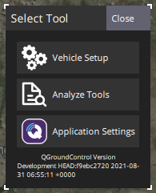

MAVLink 탐색기
MAVLink 탐색기는 QGroundControl에서 수신한 MAVLink 트래픽에 대한 실시간 정보와 차트를 제공합니다.
이 기능은 자동 조종 장치 개발자와 자동차 제작자에게 매우 유용합니다. 데스크톱(Windows, Linux, Mac OS) 버전에서 지원됩니다.

탐색기는 현재 기체에서 수신된 모든 메시지를 소스 구성 요소 ID 및 업데이트 빈도를 출력합니다. 개별 메시지로 드릴다운하여 메시지 Id, 소스 구성 요소 Id 및 모든 개별 필드의 값을 제공합니다. 또한 실시간으로 필드 값을 차트로 작성하여, 메시지들의 필드 정보들을 선택하여 두 차트 중 하나에 표시할 수 있습니다.
MAVLink 탐색기를 사용하려면:
- QGroundControl 애플리케이션 메뉴(왼쪽 상단의 "Q" 아이콘)를 선택한 다음 분석 도구 버튼을 선택하여 분석 보기를 엽니다(도구 선택 팝업). 
사이드바에서 MAVLink 탐색기를 선택합니다.

보기는 수신되는 메시지로 채워지기 시작합니다.
조회할 필드와 해당(동적으로 업데이트되는) 값의 메시지를 선택하십시오.

인접한 확인란을 활성화하여 차트에 필드를 추가합니다(플롯 1은 플롯 2 아래에 표시됨).

- 필드는 하나의 차트에만 추가할 수 있습니다.
차트에는 여러 필드와 여러 메시지의 필드가 있을 수 있습니다(각 차트 위에 나열됨). 차트로 표시되는 필드가 포함된 메시지는 별표로 강조됩니다.

- Scale 및 Range는 적절한 값으로 설정되지만 필요한 경우 수정할 수 있습니다.